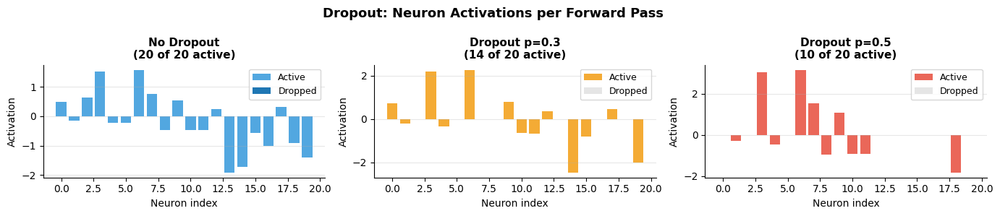
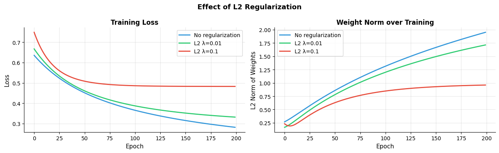
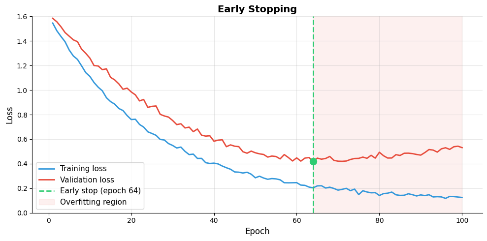
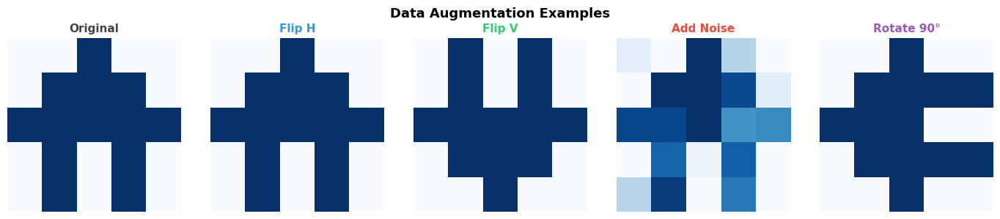
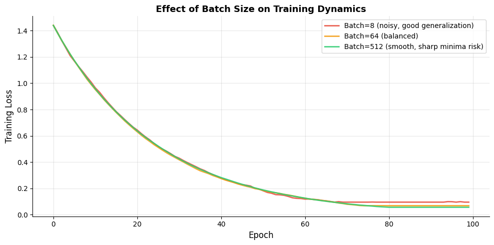

How do we prevent neural networks from overfitting?#
Topics: Dropout · L1/L2 Regularization · Early Stopping · Data Augmentation · Batch Size Effects
1. Dropout#
What it is#
Randomly sets a fraction of neurons to zero during each training step
Each neuron is dropped independently with probability p
At inference: all neurons active, outputs scaled by (1-p)
Key intuition#
Prevents neurons from co-adapting — each must learn useful features independently
Effectively trains an ensemble of thinned networks
Only applied during training, not inference
When to use#
Dense (fully connected) layers — p=0.3 to 0.5
After convolutional layers — p=0.1 to 0.3 (lower, spatial structure matters)
When not to use#
Very small networks — too much information is lost
After batch normalization — they can interfere
import numpy as np
import matplotlib.pyplot as plt
np.random.seed(42)
def dropout(x, p=0.5, training=True):
if not training:
return x
mask = (np.random.rand(*x.shape) > p) / (1 - p) # inverted dropout (scale during training)
return x * mask
# Visualize dropout effect on a layer of 20 neurons
activations = np.random.randn(1, 20)
fig, axes = plt.subplots(1, 3, figsize=(14, 3))
configs = [
(0.0, 'No Dropout', '#3498DB'),
(0.3, 'Dropout p=0.3', '#F39C12'),
(0.5, 'Dropout p=0.5', '#E74C3C'),
]
for ax, (p, title, color) in zip(axes, configs):
if p == 0:
out = activations
else:
out = dropout(activations, p=p, training=True)
active = (out != 0).ravel()
dropped = (out == 0).ravel()
ax.bar(np.where(active)[0], out.ravel()[active], color=color, alpha=0.85, label='Active')
ax.bar(np.where(dropped)[0], np.zeros(dropped.sum()), color='#CCCCCC', alpha=0.5, label='Dropped')
ax.set_title(f'{title}\n({int((1-p)*20)} of 20 active)', fontsize=11, fontweight='bold')
ax.set_xlabel('Neuron index', fontsize=10)
ax.set_ylabel('Activation', fontsize=10)
ax.legend(fontsize=9)
ax.grid(True, alpha=0.3, axis='y')
ax.spines['top'].set_visible(False)
ax.spines['right'].set_visible(False)
plt.suptitle('Dropout: Neuron Activations per Forward Pass', fontsize=13, fontweight='bold')
plt.tight_layout()
plt.savefig('dropout.png', dpi=120, bbox_inches='tight')
plt.show()

Interview Q&A#
What is inverted dropout?
Scales active neurons by 1/(1-p) during training so expected output stays the same
Means no scaling adjustment needed at inference — cleaner implementation
PyTorch uses inverted dropout by default
Why doesn’t dropout help at inference?
All neurons active → more stable, deterministic predictions
Scaling (inverted dropout) ensures expected value matches training
Gotchas#
Always call model.train() for training and model.eval() for inference in PyTorch
Dropout after BN can be counterproductive — usually place dropout before BN or omit one
Too high dropout rate → underfitting → start with p=0.3 and tune
2. L1 / L2 Regularization#
What it is#
Adds penalty on weight magnitude to the loss function
L2 (weight decay):
Loss = CE + λ·Σw²→ shrinks all weightsL1:
Loss = CE + λ·Σ|w|→ drives some weights to exactly zero
Key intuition#
Large weights → model memorizes → bad generalization
Penalty forces model to use smaller, more distributed weights
When to use#
L2 → almost always useful, standard in most networks via weight_decay in optimizer
L1 → when you want sparse weights (rare in deep learning, common in linear models)
import numpy as np
import matplotlib.pyplot as plt
np.random.seed(42)
# Simulate training with different regularization strengths
def simulate_training(lambda_l2=0.0, epochs=200):
X = np.random.randn(100, 5)
y = (X[:, 0] + X[:, 1] > 0).astype(float)
W = np.random.randn(5, 1) * 0.1
b = np.zeros(1)
lr = 0.05
train_losses, weight_norms = [], []
for _ in range(epochs):
z = X @ W + b
p = 1 / (1 + np.exp(-z))
loss = -np.mean(y.reshape(-1,1)*np.log(p+1e-8) + (1-y.reshape(-1,1))*np.log(1-p+1e-8))
loss += lambda_l2 * np.sum(W**2)
train_losses.append(loss)
weight_norms.append(np.linalg.norm(W))
dz = p - y.reshape(-1, 1)
W -= lr * (X.T @ dz / 100 + 2 * lambda_l2 * W)
b -= lr * dz.mean()
return train_losses, weight_norms
epochs = 200
configs = [(0.0, '#3498DB', 'No regularization'),
(0.01, '#2ECC71', 'L2 λ=0.01'),
(0.1, '#E74C3C', 'L2 λ=0.1')]
fig, axes = plt.subplots(1, 2, figsize=(13, 4))
for lam, color, label in configs:
losses, norms = simulate_training(lambda_l2=lam, epochs=epochs)
axes[0].plot(losses, color=color, linewidth=2, label=label)
axes[1].plot(norms, color=color, linewidth=2, label=label)
for ax, title, ylabel in zip(axes,
['Training Loss', 'Weight Norm over Training'],
['Loss', 'L2 Norm of Weights']):
ax.set_title(title, fontsize=12, fontweight='bold')
ax.set_xlabel('Epoch', fontsize=11)
ax.set_ylabel(ylabel, fontsize=11)
ax.legend(fontsize=10)
ax.grid(True, alpha=0.3)
ax.spines['top'].set_visible(False)
ax.spines['right'].set_visible(False)
plt.suptitle('Effect of L2 Regularization', fontsize=13, fontweight='bold')
plt.tight_layout()
plt.savefig('l2_regularization.png', dpi=120, bbox_inches='tight')
plt.show()

3. Early Stopping#
What it is#
Stop training when validation loss stops improving
Save the model weights at the best validation loss checkpoint
Key intuition#
Training loss always decreases. Validation loss eventually increases (overfitting begins)
Stop at the point where validation loss is lowest → best generalization
When to use#
Always — it’s essentially free regularization
Especially useful when you can’t afford a large validation set
Parameters#
patience → how many epochs to wait after last improvement before stopping
min_delta → minimum improvement to count as improvement
import numpy as np
import matplotlib.pyplot as plt
np.random.seed(42)
# Simulate training and validation loss curves
epochs = np.arange(1, 101)
train_loss = 1.5 * np.exp(-0.04 * epochs) + 0.1 + np.random.randn(100) * 0.01
val_loss = 1.5 * np.exp(-0.03 * epochs) + 0.15 + 0.002 * (epochs - 50).clip(0)**1.3
val_loss += np.random.randn(100) * 0.015
best_epoch = np.argmin(val_loss) + 1
best_val = val_loss[best_epoch - 1]
fig, ax = plt.subplots(figsize=(10, 5))
ax.plot(epochs, train_loss, color='#3498DB', linewidth=2, label='Training loss')
ax.plot(epochs, val_loss, color='#E74C3C', linewidth=2, label='Validation loss')
ax.axvline(best_epoch, color='#2ECC71', linewidth=2, linestyle='--',
label=f'Early stop (epoch {best_epoch})')
ax.scatter([best_epoch], [best_val], color='#2ECC71', s=100, zorder=5)
ax.fill_betweenx([0, 2], best_epoch, 100, alpha=0.08, color='#E74C3C',
label='Overfitting region')
ax.set_xlabel('Epoch', fontsize=12)
ax.set_ylabel('Loss', fontsize=12)
ax.set_title('Early Stopping', fontsize=14, fontweight='bold')
ax.set_ylim(0, 1.6)
ax.legend(fontsize=11)
ax.grid(True, alpha=0.3)
ax.spines['top'].set_visible(False)
ax.spines['right'].set_visible(False)
plt.tight_layout()
plt.savefig('early_stopping.png', dpi=120, bbox_inches='tight')
plt.show()
print(f"Best epoch: {best_epoch} | Best val loss: {best_val:.4f}")

Best epoch: 64 | Best val loss: 0.4194
Interview Q&A#
What patience value should you use?
5–20 epochs is typical depending on how noisy validation loss is
Too small → stops too early, may miss improvement after a plateau
Too large → trains too long, wastes compute
Should you restore best weights after early stopping?
Yes — always save and restore the checkpoint with the best validation loss
The final epoch weights are usually worse than the best checkpoint
Gotchas#
Validate on a proper held-out set — not the training set
Learning rate warmup can cause initial val loss to increase — set patience accordingly
4. Data Augmentation#
What it is#
Artificially expands training data by applying transformations to existing samples
Model sees more diverse examples → better generalization
Common augmentations#
Domain |
Augmentations |
|---|---|
Images |
Flip, rotate, crop, color jitter, noise, cutout |
Text |
Synonym replacement, back-translation, random deletion |
Audio |
Time stretch, pitch shift, noise injection |
Key intuition#
If a flipped cat is still a cat, the model should learn that
Augmentation encodes task-relevant invariances into the model
When to use#
Small datasets — augmentation is a multiplier on effective dataset size
When validation accuracy is much lower than training accuracy
When not to use#
Augmentations that change the label (e.g. flipping a “6” makes it look like a “9”)
Already very large datasets where compute cost outweighs benefit
import numpy as np
import matplotlib.pyplot as plt
np.random.seed(42)
# Simulate a simple image (5x5) and basic augmentations
img = np.array([
[0,0,1,0,0],
[0,1,1,1,0],
[1,1,1,1,1],
[0,1,0,1,0],
[0,1,0,1,0],
], dtype=float)
def flip_horizontal(x): return np.fliplr(x)
def flip_vertical(x): return np.flipud(x)
def add_noise(x, std=0.2): return np.clip(x + np.random.randn(*x.shape)*std, 0, 1)
def rotate_90(x): return np.rot90(x)
augmentations = [
(img, 'Original', '#444444'),
(flip_horizontal(img), 'Flip H', '#3498DB'),
(flip_vertical(img), 'Flip V', '#2ECC71'),
(add_noise(img), 'Add Noise', '#E74C3C'),
(rotate_90(img), 'Rotate 90°', '#9B59B6'),
]
fig, axes = plt.subplots(1, 5, figsize=(14, 3))
for ax, (aug_img, title, color) in zip(axes, augmentations):
ax.imshow(aug_img, cmap='Blues', vmin=0, vmax=1)
ax.set_title(title, fontsize=11, fontweight='bold', color=color)
ax.axis('off')
plt.suptitle('Data Augmentation Examples', fontsize=13, fontweight='bold')
plt.tight_layout()
plt.savefig('data_augmentation.png', dpi=120, bbox_inches='tight')
plt.show()

Interview Q&A#
How much does augmentation help?
On small datasets: massive improvement (can effectively 10x the dataset)
On large datasets: smaller but still meaningful improvement
What is Mixup augmentation?
Blends two training samples and their labels:
x = λ·x1 + (1-λ)·x2Forces model to behave linearly between training examples → better calibration
Gotchas#
Augmentation must preserve the label — always verify augmentations are semantically valid
Apply augmentation only to training data, not validation or test
Too aggressive augmentation can hurt performance — the model can’t learn stable patterns
5. Batch Size Effects#
What it is#
Number of samples used to compute gradient in each update step
Affects training speed, memory, and generalization
Key intuition#
Batch size |
Gradient noise |
Generalization |
Speed |
|---|---|---|---|
Small (8–32) |
High |
Often better |
Slow (many updates) |
Large (256–2048) |
Low |
Often worse |
Fast (GPU efficient) |
Small batches: noisy gradients → escapes sharp minima → often better generalization
Large batches: stable gradients → converges to sharp minima → can overfit
Rule of thumb#
Start with batch size 32–128
If using large batch: increase learning rate proportionally (linear scaling rule)
When to use large batches#
When training time is the constraint and GPU memory allows
With careful LR warmup to stabilize large-batch training
import numpy as np
import matplotlib.pyplot as plt
np.random.seed(42)
# Simulate loss curves for different batch sizes
def simulate_loss(batch_size, noise_scale, epochs=100):
loss = 1.5
losses = []
np.random.seed(batch_size)
for _ in range(epochs):
noise = np.random.randn() * noise_scale
loss = loss * 0.96 + noise * 0.02
loss = max(loss, 0.05 + noise_scale * 0.3)
losses.append(loss)
return losses
configs = [
(8, 0.15, '#E74C3C', 'Batch=8 (noisy, good generalization)'),
(64, 0.06, '#F39C12', 'Batch=64 (balanced)'),
(512, 0.02, '#2ECC71', 'Batch=512 (smooth, sharp minima risk)'),
]
fig, ax = plt.subplots(figsize=(10, 5))
for bs, noise, color, label in configs:
losses = simulate_loss(bs, noise)
ax.plot(losses, color=color, linewidth=2, label=label, alpha=0.85)
ax.set_xlabel('Epoch', fontsize=12)
ax.set_ylabel('Training Loss', fontsize=12)
ax.set_title('Effect of Batch Size on Training Dynamics', fontsize=13, fontweight='bold')
ax.legend(fontsize=10)
ax.grid(True, alpha=0.3)
ax.spines['top'].set_visible(False)
ax.spines['right'].set_visible(False)
plt.tight_layout()
plt.savefig('batch_size_effects.png', dpi=120, bbox_inches='tight')
plt.show()

Interview Q&A#
Why do large batches generalize worse?
Large batches → low-noise gradients → converge to sharp minima
Sharp minima → small perturbation in weights → large increase in loss → poor generalization
Small batches → noisy gradients → settle in flat minima → more robust
What is the linear scaling rule?
When multiplying batch size by k, multiply learning rate by k
Works well up to batch size ~8192, then needs warmup
Gotchas#
Larger batch requires larger learning rate — don’t forget to rescale
Gradient accumulation: simulate large batches on small GPU memory by accumulating gradients over multiple small batches before stepping